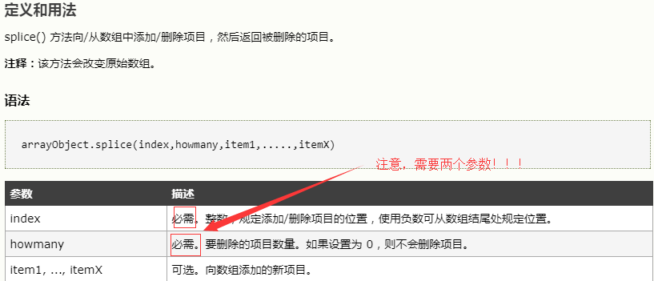
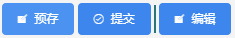

目录
1. js正则判断 /
/正斜杠在javascript正则表达式中可以\/表示,例如:
还有一个比较重要的而且是基础的点,replace()方法的默认语法
2. js splice()方法
以前,我一直以为splice(数组长度)即可删除数组,因为以前几乎没用过这个方法,毕竟用vue之前直接数组=[]就可以了,但是vue不能这样做,因为如果直接使用=给数组赋值,vue是无法监听数组变化的,也就无法做到响应式,所以vue提供了变异数组方法。而我恰好需要删除数组重新赋值,结果采坑了。。。

这是基础不牢的后果啊！
splice方法必须至少要两个参数,一个是开始删除位置,第二个是删除个数！切记！！！
3. css3 pointer-events
开发vue项目时遇到个问题,一个div内部有文字和一个img,我给这个div添加了click事件让它变色,然后内部图片是不能变色的,一开始用了@click.stop解决问题了,但是又发现了新问题：点击图片部分的话外部div不变色,这样明显效果不好,网上百度了下发现css3里面提供了 pointer-events属性,完美解决。
想了解的话看：
https://developer.mozilla.org/zh-CN/docs/Web/CSS/pointer-events
https://segmentfault.com/a/1190000003848737
案例：
4. eslint 配置
看：
https://segmentfault.com/a/1190000008742240
https://eslint.org/docs/user-guide/configuring
由于老板不想看到tab缩进,要求项目中eslint规则改为默认缩进2字节,而之前项目一直用的tab缩进,四个字符。虽然通过上面两个链接知道了需要改配置里面的indent属性,但是之前的用tab缩进的都需要改成space空格缩进,总不能一个一个文件的改吧,太浪费时间了。
网上也找了一会,知道eslint有一个自动修复功能,百度了好几个方法都不行,后来在 https://segmentfault.com/q/1010000010755226/a-1020000010759699 找到了答案,加上了命令后需要在npm start之前先npm run lintfix进行修复。PS：我在找到这个方法前还安装了eslint-plugin-vuefix依赖,不知道有没有影响。
5. ::after 和 ::before伪类
开发中可能会遇到要求画线等特殊要求,以前做法是通过div的边来设置横竖线,但是这样不大好。最近知道了::after和::before伪元素,用起来更简单,下面给个示例(用了iview)：
css:
图：
